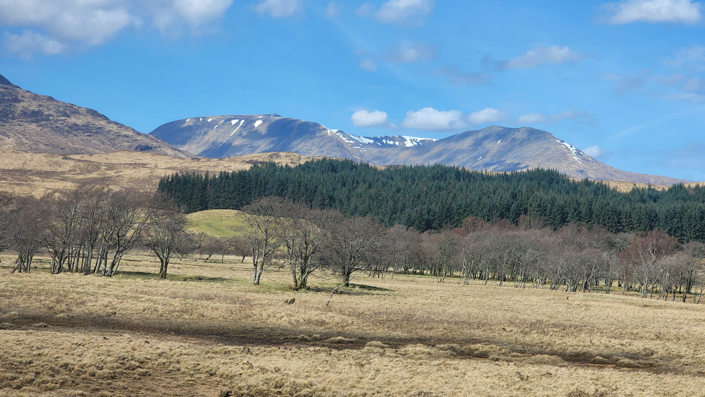
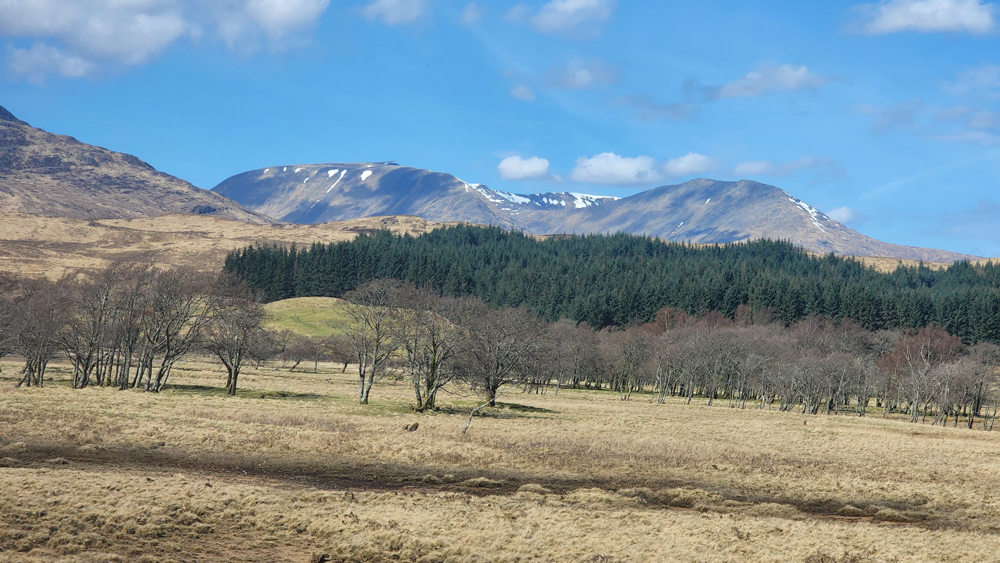

Scotland is a country that is part of the United Kingdom. It contains nearly one-third of the United Kingdom's land area, consisting of the northern part of the island of Great Britain and more than 790 adjacent islands, principally in the archipelagos of the Hebrides and the Northern Isles.To the south-east, Scotland has its only land border, which is 96 miles (154 km) long and shared with England; the country is surrounded by the Atlantic Ocean to the north and west, the North Sea to the north-east and east, and the Irish Sea to the south. The population in 2022 was 5,436,600 and accounts for 8% of the population of the UK.Edinburgh is the capital and Glasgow is the largest of the cities of Scotland.
 
